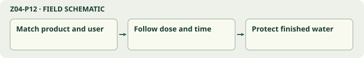

Z04-P12 · Water · Adapted historical material
Screen chemical disinfectant limitations
Select a documented drinking-water disinfectant while accounting for parasite and user restrictions.
When it applies · Backcountry microbial risk after source screening. Match the device, water and user to the published label.
Equipment · Identified product for drinking water, readable instructions, suitable vessel and timer.

Actions
- Check the product's claim, contact time and batch volume. Typical chemical disinfection leaves gaps for some parasites; CDC advises filtering before disinfecting when using this sequence.[W04, W05, W10]
- Avoid iodine-treated drinking water during pregnancy, with thyroid problems or with known iodine hypersensitivity. Choose an appropriate alternative.[W10]
- Follow the approved label for the actual water condition and quantity. Record the time and keep the finished batch separate.[W05, W06, ED]
Verify · The user, product, concentration, volume and contact time all match the guidance.[W05, W10, ED]
Stop or change course · Missing label instructions, uncertain dose or unresolved chemical contamination means the treatment is inapplicable.[W01, W05]
Evidence and editorial notes
- W01 · CDC · How to Make Water Safe in an Emergency (2024-09-19)
- Section: Water with fuel or toxic chemicals in it · Conditions: Suspected fuel, toxic chemicals or radioactive contamination
Support: Use a different safe supply. Standard boiling and microbial disinfection do not make this water safe.
Limitations: Does not list contaminant-specific lab remediation; applies to emergency consumer decisions only. · Conflicting evidence: None across CDC/EPA emergency guidance.
Editorial note: Used as upstream hard-stop gate prior to any field treatment card. · Specialist reviewer: Drinking-water safety and public health
Primary source · checked 2026-11-24 - W04 · CDC · Water Treatment Options When Hiking, Camping, or Traveling (current web edition)
- Section: Water treatment methods > Filter and disinfect · Conditions: Untreated backcountry water; suitable devices and directions
Support: Filter capability varies. Filtering then disinfecting addresses gaps left by typical portable filters. Follow both manufacturers' directions.
Limitations: Effectiveness depends on pore rating, cartridge integrity, and manufacturer-verified test standards. · Conflicting evidence: None; consumer claims outside NSF/EPA standards are excluded.
Editorial note: Used to require multi-barrier pairing rather than relying on one filter alone. · Specialist reviewer: Drinking-water treatment specialist
Primary source · checked 2026-11-24 - W05 · CDC · How to Make Water Safe in an Emergency (2024-09-19)
- Section: Disinfect; Using light · Conditions: Matched product, concentration, dose, contact time and source condition
Support: Chemical disinfection is less dependable against some parasites. UV needs clear water and a correctly used device.
Limitations: Cold temperature and organic turbidity reduce chemical efficacy and UV penetration. · Conflicting evidence: None; exact manufacturer label governs dose and wait time.
Editorial note: Prohibits improvised chemical dosing when labels are absent. · Specialist reviewer: Drinking-water treatment specialist
Primary source · checked 2026-11-24 - W06 · CDC · How to Create an Emergency Water Supply (current web edition)
- Section: How to store emergency water; Safe storage containers · Conditions: Potable water intended for emergency storage
Support: Prefer sealed commercial water or clean food-grade tight-closing containers. Avoid containers that held toxic chemicals.
Limitations: Container shelf durability and rotation depend on plastic/material type and storage heat. · Conflicting evidence: None; reinforces strict raw-vs-clean segregation.
Editorial note: Used to enforce labeling and dedicated raw/potable vessel separation. · Specialist reviewer: Drinking-water safety and public health
Primary source · checked 2026-11-24 - W10 · CDC · Water Treatment Options When Hiking, Camping, or Traveling (current web edition)
- Section: Disinfect; Who should avoid water disinfected with iodine · Conditions: Backcountry water with acceptable chemical source; label-directed treatment
Support: Avoid iodine-treated drinking water during pregnancy, with thyroid problems or known iodine hypersensitivity. Chlorine and iodine are unreliable against some parasites.
Limitations: Not intended for prolonged multi-week use even in healthy adults; check product label. · Conflicting evidence: None; aligns with CDC backcountry guidance.
Editorial note: Mandates user medical screening before choosing iodine disinfection. · Specialist reviewer: Drinking-water safety and wilderness medicine
Primary source · checked 2026-11-24
Source lineage · B009 revision and CDC backcountry guide · Classification · Adapted historical material.